TPR's Mega Europe Trip
Rome Rome Credit Whoring Rainbow Magicland Fiabilandia Mirabilandia
Movieland Studios Gardaland Walygator Parc
Holiday Park
Europa Park
Fort Fun
Heide Park Schlossbeck Movie Park Germany Phantasialand
Parc Asterix Disneyland Paris
 All right. After our fun evening at Holiday Park, we were off to stay at Europa Park's on site hotel, the Hotel Colloseo.
All right. After our fun evening at Holiday Park, we were off to stay at Europa Park's on site hotel, the Hotel Colloseo.
Ooh. Nice Wodan Model you got there.
Well lets go to our rooms and put our stuff away.
Damn. These rooms are NICE!!!!!!!
You may have thought that we just went to bed, but nope. We hit the bar for some fun.
Neil decided to buy me a fancy drink. So I got a Sex on the Beach, but spilled about 75% of it on the floor like the clumsy idiot I am.
Good morning. The Hotel Colloseum really had a good breakfast.
All right. Time to head on over to Europa Park.
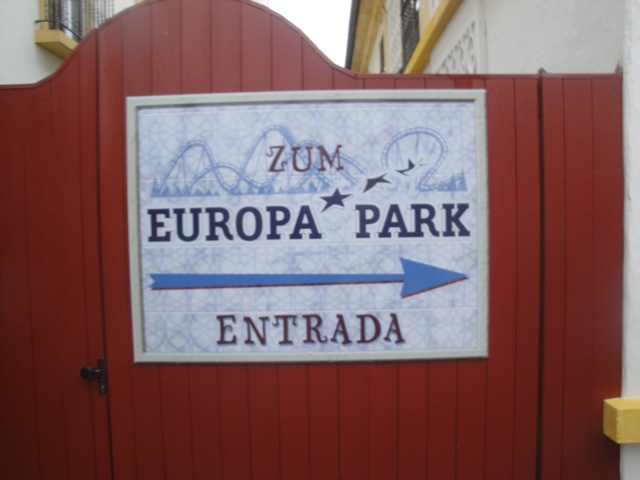
Yeah. We'll be taking the secret hotel entrance to the park today.
 When you see the bull's balls, you know you're in the right place.
When you see the bull's balls, you know you're in the right place.
 First off, we start off our morning with Blue Fire ERT.
First off, we start off our morning with Blue Fire ERT.
Well, it wasn't technically ERT as it was open to other hotel guests as well. Which I normally wouldn't mind, except that some asshole kid from the hotel stole Will's camera.
 After our Blue Fire ERT, we decided to check out the rest of the park. And while we're here. Why the hell not ride the powered coaster.
After our Blue Fire ERT, we decided to check out the rest of the park. And while we're here. Why the hell not ride the powered coaster.
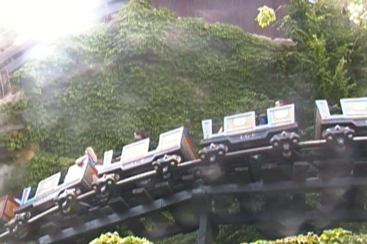
Hey, it may not count as a credit, but it was a lot of fun. =)
Not knowing what the hell it was, we decided to try out the Bibliothek der Brothers Grimm.
Umm, yeah. This was probably the most f*cked up thing I have ever seen in a theme park.
"I really love this new look. I must say, this is my favorite ride ever. I think I love it even more than beer."
Apparently, they put us in the show and I was the wizard and they had to find me. Ummm, Hooray?
Ok, I just have to stop and walk around to really absorb all of the beauty Europa Park has to offer.
 This place is so well themed that its pracically unbelieveable.
This place is so well themed that its pracically unbelieveable.
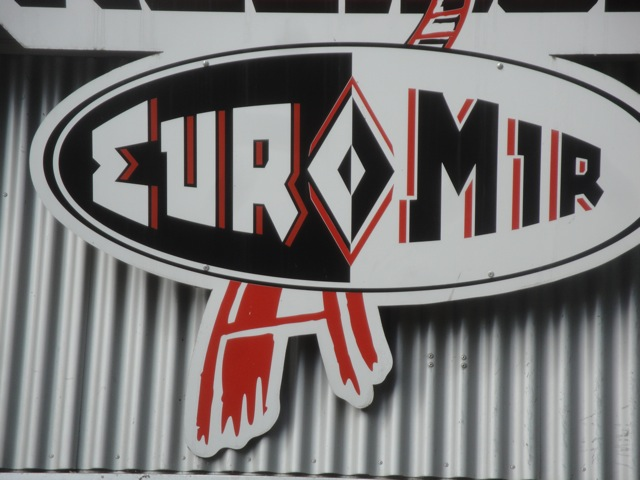
Afterwards, we decided to go and check out Euro Mir.
 This ride is so bizzare, strange, and f*cked up, that its just unbelievable.
This ride is so bizzare, strange, and f*cked up, that its just unbelievable.
 All right. Lets check out their Bobsled.
All right. Lets check out their Bobsled.
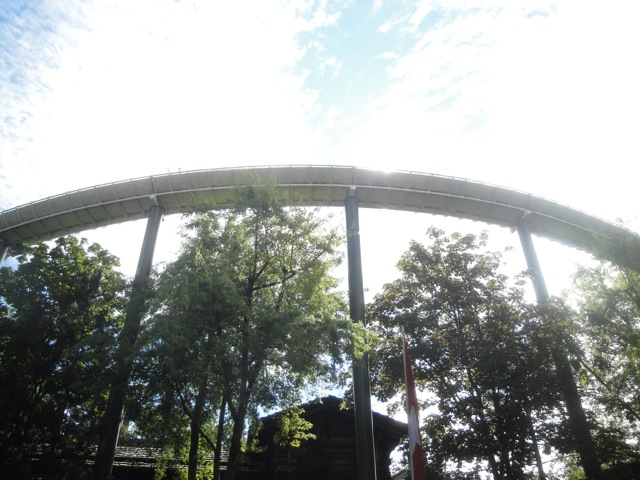
Yeah. The Mack Bobsleds are much better than the Intamin ones.
 Its time to check out the parks Wild Mouse.
Its time to check out the parks Wild Mouse.
Hey, this park hauls ass with operations. They're so good that even their Wild Mouse has good operations. And it has cool barnyard theming in line.
 Aren't these your favorite rides ever Cliff?
Aren't these your favorite rides ever Cliff?
 Dude. There's a tilting elevator lift on this ride!!! AWESOME!!!!!
Dude. There's a tilting elevator lift on this ride!!! AWESOME!!!!!
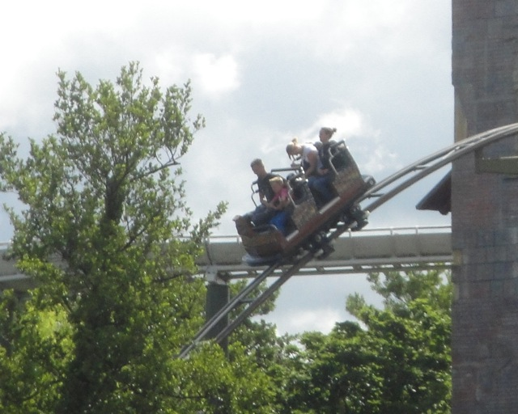
But yeah. After the elevator, its pretty much just the typical Big First Drop Wild Mouse.
Well, its gonna get a long line, so lets get Posideon out of the way.
 But yeah. Thanks to Europa Park's incredible operations, what would normally be a 2 hour line was only 30 minutes. =)
But yeah. Thanks to Europa Park's incredible operations, what would normally be a 2 hour line was only 30 minutes. =)
 And yeah. Its a really cool water coaster.
And yeah. Its a really cool water coaster.
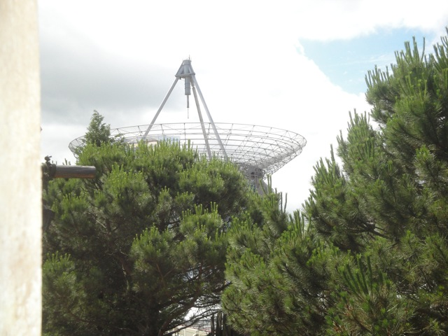
Attention aileans. You are welcome at Europa Park.
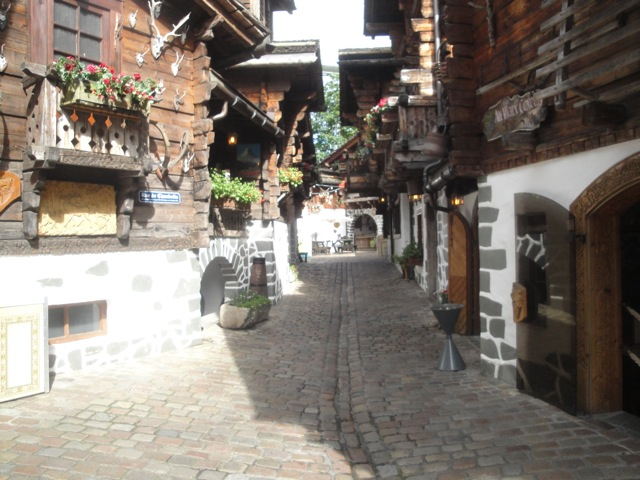
Umm, did I go back to Switzerland?
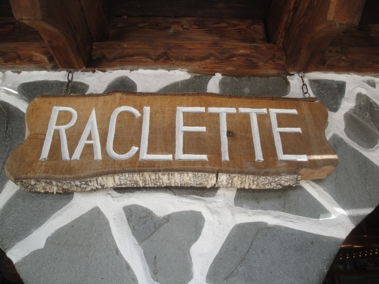
Elissa kept raving about how good the raclette is here, so yeah. I naturally went and tried it.
And yeah. Raclette is some really freaking good cheese!!! =)
Hey look!!! Windjammer is still alive!!!!
Nope. First off, its Vindjammer, and its just a pirate ship.
 All right. Lets check out the parks new for 2012 GCI, Wodan.
All right. Lets check out the parks new for 2012 GCI, Wodan.
Yeah. Its got a long line, but luckily, we're in Europa Park. This won't be very long. Plus its well themed too.
In this mythical place a long time ago, they drank this magical substance called Coca Cola.
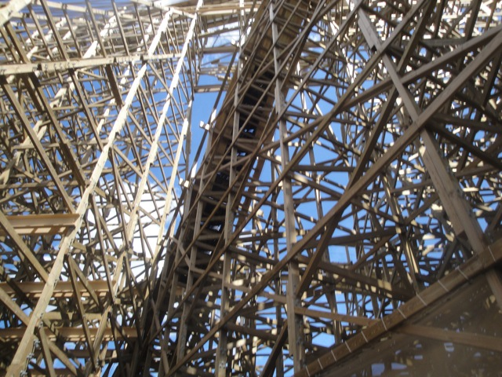
Yeah. That first drop looks freaking amazing.
"Mmm. Wodan tastes good. Now I need a beer to wash it down."
 This looks freaking amazing. Could this be my new favorite GCI?
This looks freaking amazing. Could this be my new favorite GCI?
 Nope. It was fun and all, but its not my favorite or even my 2nd favorite. The first drop is amazing, but after that, it mostly felt like Terminator. Yeah, its a really fun ride, but not quite as good as I was expecting.
Nope. It was fun and all, but its not my favorite or even my 2nd favorite. The first drop is amazing, but after that, it mostly felt like Terminator. Yeah, its a really fun ride, but not quite as good as I was expecting.
 I did not bother with Atlantica Supersplash. Now some of you may be baffled since I'm a total credit whore, and I am. The only problem is that its not a credit, and I'd rather spend my time at Europa Park doing much better stuff.
I did not bother with Atlantica Supersplash. Now some of you may be baffled since I'm a total credit whore, and I am. The only problem is that its not a credit, and I'd rather spend my time at Europa Park doing much better stuff.
All right. Lets take a ride on their Monorail and just take a nice good look at this amazing park.
I didn't eat here, but they did have a cool resteraunt that had your food ride a roller coaster to your table. Which is totally awesome. I'd like to try the place out next time.
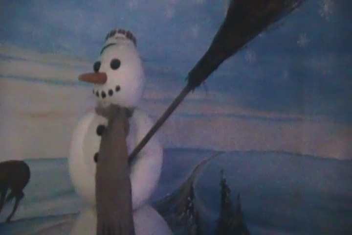
Hey look!!! A random dark ride with no line!!! Lets take a ride!!!
It was a fun ride, though it felt weird riding a winter themed dark ride in the middle of summer.
 All right. Lets just focus on getting the rest of the credits at Europa Park.
All right. Lets just focus on getting the rest of the credits at Europa Park.
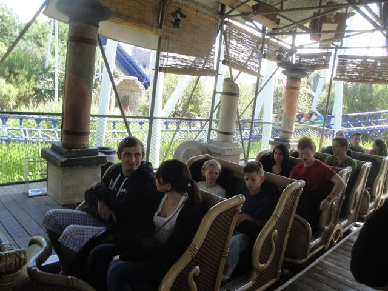
We'll get this one out of the way since it seems like a small coaster with not so great (by Europa Park standards) capacity.
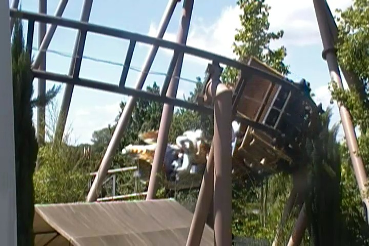
Hey, this was a really fun ride. It was definetly bigger than a kiddy coaster, but not quite a big coaster. It felt like a giant roller skater on steroids and is a perfect family coaster. I'm glad that there are clones of this thing at other parks.
 I must be hallucinating. For I seem to have morphed Europa Park into Epcot.
I must be hallucinating. For I seem to have morphed Europa Park into Epcot.
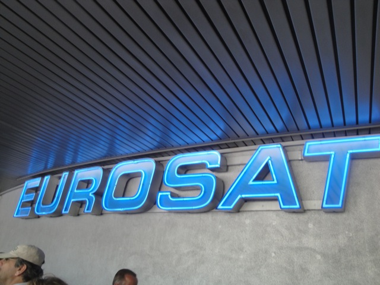
Nope. They just host Euro Sat inside the same type of building that they have Spaceship Earth in.
Ooh!! Euro Sat has its very own escelator!!! How fancy!!!
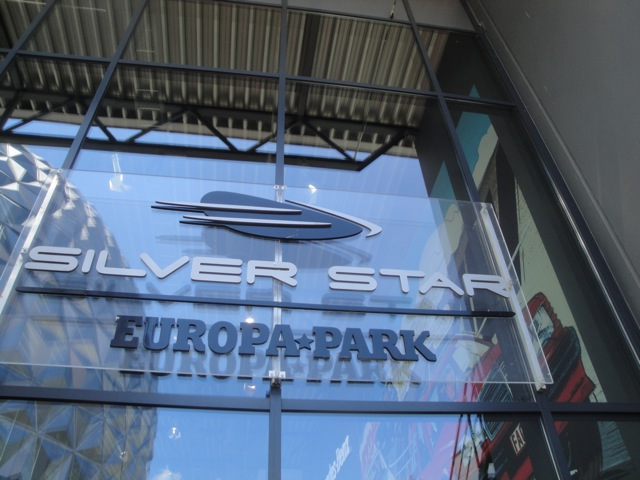
All right. All we need now is Silver Star and we're done. =)
Umm, yeah. The line for Silver Star is very strange.
AKA, you're gonna be waiting forever for the front row.
 So yeah. How did Silver Star rank up to the other B&M Hypers?
So yeah. How did Silver Star rank up to the other B&M Hypers?
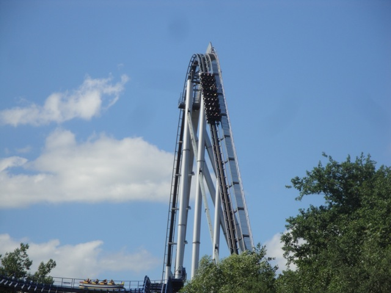
Honsetly, I wasn't that impressed. It totally reminded me of Goliath @ La Ronde. It was fun, but certainly not very strong.
Cheers to getting all the credits in Europa Park.
Now we can relax and just take it easy at Europa Park. =)
Yeah. Lets go up in the Observation Tower and get some great ariel (video) shots.
Hey, lets go check out the Stupid Boat Ride!!!
"I've got so much to live for!!!!"
Its a good thing you're in a place like Europa Park and not in a place like SFMM or else you'd be dead long ago.
 Well, we liked the last stupid boat ride. So lets go ride another one.
Well, we liked the last stupid boat ride. So lets go ride another one.
"Does this thing spin or is the beer just kicking in?"
Hey look!!! Its themed to Pinnochio!!!! Now when do we turn into...oh wait, we turned into jackasses long ago.
Hey. Why the hell not?
"Dammit. It looks like I'm finally paying for my lifesyle of living off nothing but Beer and Dunar Kebabs."
 Dude, these slides are actually really freaking insane. You completely fly off them.
Dude, these slides are actually really freaking insane. You completely fly off them.
All right. Time for another cool Europa Park Dark Ride.
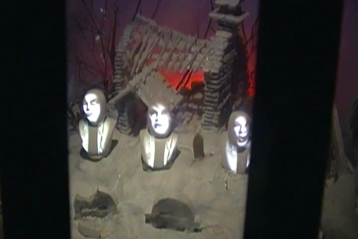
Its this sort of weird haunted mansion type knock off.
Yeah. Its a kick ass dark ride.
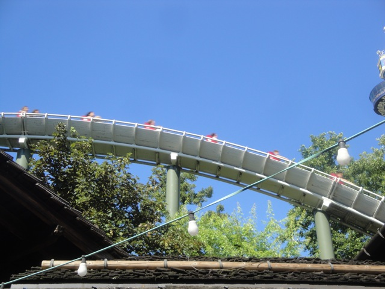
Lets take another ride on Schwiezer Bobbahn. Their bobsled.
 Yeah. You can see the way it twists through all the turns.
Yeah. You can see the way it twists through all the turns.
Look out for that tiny little river.
Quick. Gotta finish my beer before I hop on the bobsled.
"I see I've still got my chugging skills from my college days down."
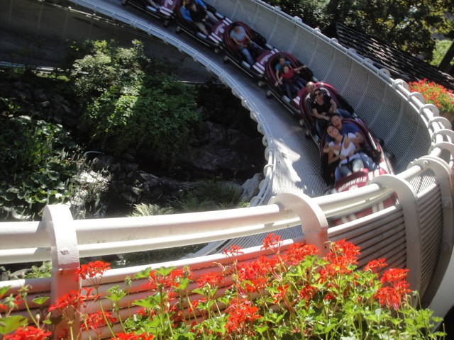
May I ask whats going on in the front row?
 I decided to try out the Gyros here, since they're similar to Duner Kebabs. Damn, these things kick some major ass.
I decided to try out the Gyros here, since they're similar to Duner Kebabs. Damn, these things kick some major ass.
 Hmm, more Blue Fire? I like that. I like that a lot. And yeah, Blue Fire is awesome. The launch is good.
Hmm, more Blue Fire? I like that. I like that a lot. And yeah, Blue Fire is awesome. The launch is good.
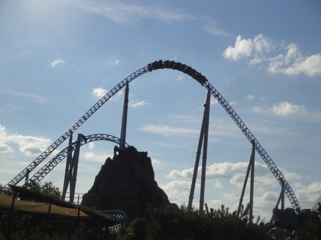
This funky turn is so slow it feels like you're going to roll back at the top.
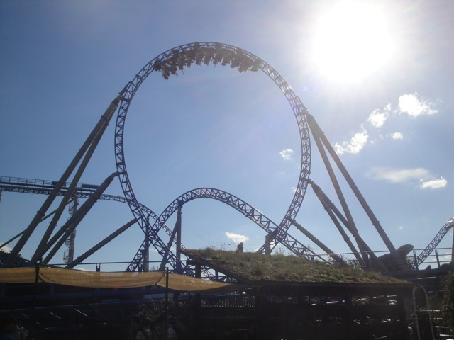
The loop is nothing special, but it is awesome since you're going through it all with just a lap bar.
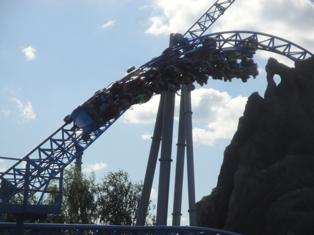
And then we have the final inline twist (Not the one in the picture). HOLY CRAP!!! THIS PART IS INSANE!!!! Its seriously one of the best inversions on any ride with a GREAT whip. It almost feels like Ispeed for this part.
Hey!!! It looks like Europa Park decided to rescue Jaws and save him from the death that awaited him at Universal Studios Florida.
I'm sure you can handle another Europa Park beauty photo. =)
 GROUP TAKEOVER OF EURO MIR!!!!!!!
GROUP TAKEOVER OF EURO MIR!!!!!!!
 HELL F*CKING YES!!!!!!!
HELL F*CKING YES!!!!!!!
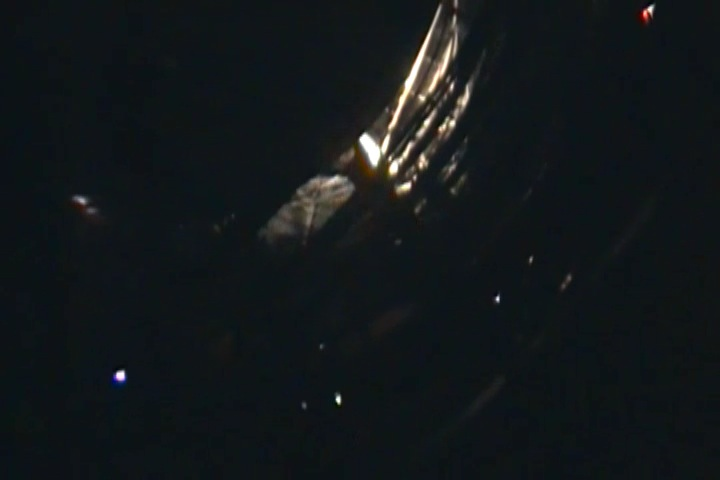
This ride is insane. First, you go up this huge spiral lifthill in the dark while its amazing theme song.
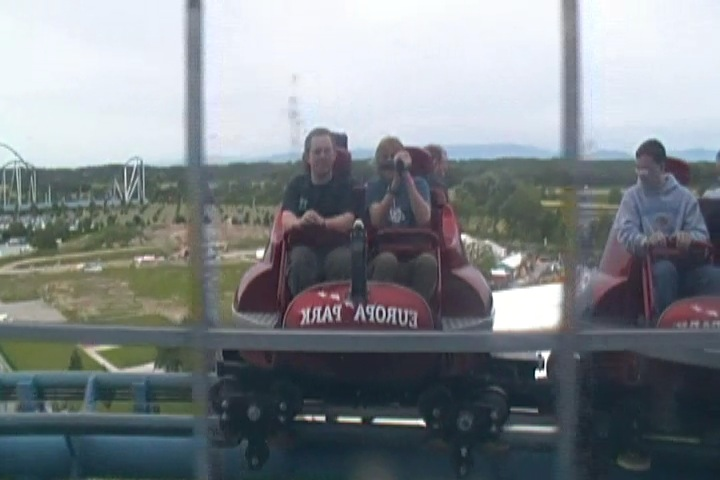
Then you go through a ton of fun with the mirrors on the towers at the top.
 And the main roller coaster part is pretty crazy too with some fun drops, and actually some insane laterals at the end, especially when riding backwards.
And the main roller coaster part is pretty crazy too with some fun drops, and actually some insane laterals at the end, especially when riding backwards.
Keep holding on!!!! You'll eventually make it back up!!!
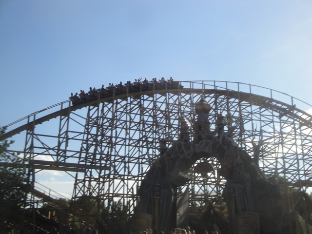
After that fun Euro Mir Party, the park announced that we would be getting ERT on Wodan!!!!
 Yeah. It was a great 30 minutes with lots of rides in on Wodan.
Yeah. It was a great 30 minutes with lots of rides in on Wodan.
I'm in Europe all right.
 And after Wodan ERT, we went to the hotel where we had a great dinner.
And after Wodan ERT, we went to the hotel where we had a great dinner.
"Dammit. Of all the days to leave our unicycles at home..."
Checking out the hotel seeing all they have to offer.
Hey guys, look really closely at this photo!!! Look what I got!!!
"Why no, officers. We're John Deere Enthusiasts. That's all." (If you weren't there, you don't get this joke). =)
Here you can see Europa Park's newest hotel, the Bell Rock Hotel which literally opened up just DAYS after our visit.
Ooh!!! The backside of water!!!
Ooh. Nice shot of Atlantica Supersplash from one of Europa Park's other hotels.
Someone give me a bag of marshmellows please!!!
Surprisingly, the very front of the park was not gated off or anything, so we went in and checked out the Adventure Playground, and yes. That slide is also crazy.
Don't go off and lose the puck guys!!!!
Yeah. The kids area is still closed.
Europa Park deserted at night.
"Thanks for using the flash and blinding me you jackass. You ruined my crappy dancing."
"If you knew what was going on earlier this night, you'd know that I deserve to be here."
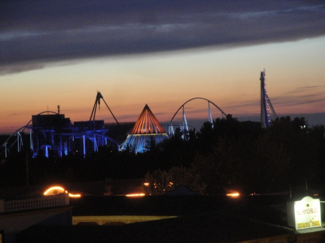
Europa Park at sunset. So beautiful.
This night, I decided to get myself a Sangria, which I made sure I DID NOT spill on the floor.
All right. Fast foreword to the next morning, we're taking the Monorail for we have a special treat for us at Europa Park before we go.
 ERT ON EUROSAT WITH THE LIGHTS ON!!!!!!!! =)
ERT ON EUROSAT WITH THE LIGHTS ON!!!!!!!! =)
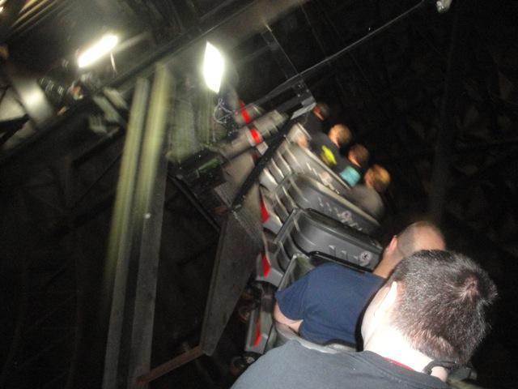
Euro Sat is very interesting. Imagine Space Mountain, if it had a long snake train, had a spiral lifthill, was super fast and twisted everywhere, provided lots of laterals, and blasted techno music.
 LIGHTSPEED!!!!!!!!
LIGHTSPEED!!!!!!!!
 And a group of us decided to sneak in one last party ride on Euro-Mir before we head on back to the bus so we can drive to our next park.
And a group of us decided to sneak in one last party ride on Euro-Mir before we head on back to the bus so we can drive to our next park.
Fort Fun
Home